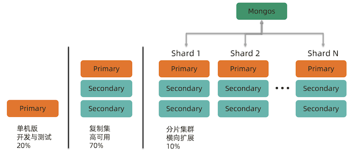

8 Mongo Shards
1 分片集群机制及原理
MongoDB 常见部署架构

为什么要使用分片集群?
- 数据容量日益增大，访问性能日渐降低，怎么破?
- 新品上线异常火爆，如何支撑更多的并发用户?
- 单库已有 10TB 数据，恢复需要1-2天，如何加速?
- 地理分布数据
分片如何解决?

把数据分成两半，放到2个库物理里
把数据分成4部分，放到4个物理库里

完整的分片集群

分片集群解剖:路由节点 mongos
路由节点
- 提供集群单一入口
- 转发应用端请求
- 选择合适数据节点进行读写
- 合并多个数据节点的返回
无状态 建议至少2个

分片集群解剖:配置节点 mongod
- 配置(目录)节点
- 提供集群元数据存储分片数据分布的映射
- 普通复制集架构
分片集群解剖:数据节点 mongod
数据节点
- 以复制集为单位横向扩展
- 最大1024分片
- 分片之间数据不重复
- 所有分片在一起才可完整工作
MongoDB 分片集群特点
- 应用全透明，无特殊处理
- 数据自动均衡
- 动态扩容，无须下线
- 提供三种分片方式
分片集群数据分布方式
- 基于范围
- 基于 Hash
- 基于 zone / tag
分片集群数据分布方式 – 基于范围
分片集群数据分布方式 – 基于哈希

分片集群数据分布方式 – 自定义Zone

小结
- 分片集群可以有效解决性能瓶颈及系统扩容问题
- 分片额外消耗较多，管理复杂，能不分片尽量不要分片
- 如果实在要用，请仔细学习下一讲
2 分片集群设计
如何用好分片集群

合理的架构 – 分片大小
分片的基本标准:
- 关于数据:数据量不超过3TB，尽可能保持在2TB一个片;
- 关于索引:常用索引必须容纳进内存;
按照以上标准初步确定分片后，还需要考虑业务压力，随着压力增大，CPU、RAM、 磁盘中的任何一项出现瓶颈时，都可以通过添加更多分片来解决。
合理的架构 – 需要多少个分片
A = 所需存储总量 / 单服务器可挂载容量（8TB / 2TB = 4）B = 工作集大小 / 单服务器内存容量(400GB / (256G * 0.6) = 3)C = 并发量总数 / (单服务器并发量 * 0.7)30000 / (9000*0.7) = 6
分片数量 = max(A, B, C) = 6
合理的架构 – 其他需求
考虑分片的分布:
- 是否需要跨机房分布分片?
- 是否需要容灾?
- 高可用的要求如何?
正确的姿势 各种概念由小到大:

- 片键 shard key:文档中的一个字段
- 文档 doc :包含 shard key 的一行数据
- 块 Chunk :包含 n 个文档
- 分片 Shard:包含 n 个 chunk
- 集群 Cluster: 包含 n 个分片
选择合适片键
影响片键效率的主要因素:
- 取值基数(Cardinality);
- 取值分布;
- 分散写，集中读;
- 被尽可能多的业务场景用到;
- 避免单调递增或递减的片键;
正确的姿势 - 选择基数大的片键
对于小基数的片键:
- 因为备选值有限，那么块的总数量就有限;
- 随着数据增多，块的大小会越来越大;
- 水平扩展时移动块会非常困难;
例如:存储一个高中的师生数据，以年龄(假设年龄范围为15~65岁)作为片键， 那么:
- 15<=年龄<=65，且只为整数
- 最多只会有51个 chunk
结论:取值基数要大!
正确的姿势 – 选择分布均匀的片键
对于分布不均匀的片键:
- 造成某些块的数据量急剧增大
- 这些块压力随之增大
- 数据均衡以 chunk 为单位，所以系统无能为力
例如:存储一个学校的师生数据，以年龄(假设年龄范围为15~65岁)作为片键，
- 15<=年龄<=65，且只为整数
- 大部分人的年龄范围为15~18岁(学生)
- 15、16、17、18四个 chunk 的数据量、访问压力远大于其他 chunk
结论:取值分布应尽可能均匀
一个 email 系统的片键例子
{
_id: ObjectId(),
user: 123,
time: Date(),
subject: "...",
recipients: [],
body: "...",
attachments: []
}
片键: { _id: 1}
读写会根据id 集中在某个shard,导致压力过大
片键: { user_id: 1 }
某个chunck 过大
片键: { user_id: 1, time:1 }
复合键是最好的选择
足够的资源
- mongos 与 config 通常消耗很少的资源，可以选择低规格虚拟机;
- 资源的重点在于 shard 服务器:
- 需要足以容纳热数据索引的内存;
- 正确创建索引后 CPU 通常不会成为瓶颈，除非涉及非常多的计算;
- 磁盘尽量选用 SSD;
- 最后，实际测试是最好的检验，来看你的资源配置是否完备。
- 即使项目初期已经具备了足够的资源，仍然需要考虑在合适的时候扩展。建议监控 各项资源使用情况，无论哪一项达到60%以上，则开始考虑扩展，因为:
- 扩展需要新的资源，申请新资源需要时间;
- 扩展后数据需要均衡，均衡需要时间。应保证新数据入库速度慢于均衡速度
- 均衡需要资源，如果资源即将或已经耗尽，均衡也是会很低效的。
小结
- 合理的架构 – 选择合适的分片大小与数量
- 正确的姿势 – 选择合适的片键
- 足够的资源 – 给足够的存储和内存资源个分片服务器
3 实验:分片集群搭建及扩容
实验目标及流程
- 目标:学习如何搭建一个2分片的分片集群
- 环境:3台 Linux 虚拟机， 4 Core 8 GB
- 步骤

实验架构
- 6 MongoD (SHARD)
- 3 Config Server
- 1~3 MongoS (Routing node)
实验架构

-
geekdemo1
- member1.example.com
- member2.example.com
-
geekdemo2
- member3.example.com
- member4.example.com
-
geekdemo3
- member5.example.com
- member6.example.com
1. 配置域名解析
在3台虚拟机上分别执行以下3条命令，注意替换实际 IP 地址
echo "192.168.1.1 geekdemo1 member1.example.com member2.example.com" >> /etc/hosts
echo "192.168.1.2 geekdemo2 member3.example.com member4.example.com" >> /etc/hosts
echo "192.168.1.3 geekdemo3 member5.example.com member6.example.com" >> /etc/hosts
2. 准备分片目录
在各服务器上创建数据目录，我们使用 /data，请按自己需要修改为其他目录:
- 在member1 / member3 / member5 上执行以下命令:
mkdir -p /data/shard1/
mkdir -p /data/config/
在member2 / member4 / member6 上执行以下命令:
mkdir -p /data/shard2/
mkdir -p /data/mongos/
Node1

Node2
Node3

3. 创建第一个分片用的复制集
在 member1 / member3 / member5 上执行以下命令。
mongod --bind_ip 0.0.0.0 --replSet shard1 --dbpath /data/shard1 --logpath /data/shard1/mongod.log --port 27010 --fork --shardsvr --wiredTigerCacheSizeGB 1
--shardsvris required to configure an instance as a shard--wiredTigerCacheSizeGB： Defines the maximum size of the internal cache that WiredTiger will use for all data. The memory consumed by an index build is separate from the WiredTiger cache memory. Values can range from 0.25 GB to 10000 GB.
Node1, Node2, node3 all run the same mongod command

4. 初始化第一个分片复制集
Node1
mongo --host member1.example.com:27010

rs.initiate({
_id: "shard1",
"members" : [
{
"_id": 0,
"host" : "member1.example.com:27010"
},
{
"_id": 1,
"host" : "member3.example.com:27010"
},
{
"_id": 2,
"host" : "member5.example.com:27010"
}
]
});

5. 创建 config server 复制集
在 member1 / member3 / member5 上执行以下命令。
Node1 / Node2 / Node3
mongod --bind_ip 0.0.0.0 --replSet config --dbpath /data/config --logpath /data/config/mongod.log --port 27019 --fork --configsvr --wiredTigerCacheSizeGB 1
- config
--configsvris required to configure an instance as a config server

可以用rs.status()查看谁抢到了primary 在 config servers中
7. 在第三台机器上搭建 mongos
一般至少起两台做高可用
Node1
# mongos --bind_ip 0.0.0.0 --logpath /data/mongos/mongos.log --port 27017 --fork
--configdb config/member1.example.com:27019,member3.example.com:27019,member5.example.com:27019
Node2
# mongos --bind_ip 0.0.0.0 --logpath /data/mongos/mongos.log --port 27017 --fork
--configdb config/member1.example.com:27019,member3.example.com:27019,member5.example.com:27019
Node3
# mongos --bind_ip 0.0.0.0 --logpath /data/mongos/mongos.log --port 27017 --fork
--configdb config/member1.example.com:27019,member3.example.com:27019,member5.example.com:27019


# 连接到mongos, 添加分片
# mongo --host member1.example.com:27017
mongos > sh.addShard("shard1/member1.example.com:27010,member3.example.com:27010,member5 .example.com:27010");

sh.status()
8. 创建分片表
# 连接到mongos, 创建分片集合
# mongo --host member1.example.com:27017
mongos > sh.status()
mongos > sh.enableSharding("foo");
mongos > sh.shardCollection("foo.bar", {_id: 'hashed'});
mongos > sh.status();
# 插入测试数据
use foo
for (var i = 0; i < 10000; i++) {
db.bar.insert({i: i});
}

9. 创建第2个分片的复制集
在 member2 / member4 / member6 上执行以下命令。
Node1, Node2, Node3
mongod --bind_ip 0.0.0.0 --replSet shard2 --dbpath /data/shard2 --logpath /data/shard2/mongod.log --port 27011 --fork --shardsvr --wiredTigerCacheSizeGB 1
10. 初始化第二个分片的复制集
Node3
# mongo --host member2.example.com:27011
rs.initiate({
_id: "shard2",
"members" : [
{
"_id": 0,
"host" : "member1.example.com:27011"
},
{
"_id": 1,
"host" : "member3.example.com:27011"
},
{
"_id": 2,
"host" : "member5.example.com:27011"
}
]
});
11. 加入第2个分片
# 连接到mongos, 添加分片
# mongo --host member1.example.com:27017
mongos > sh.addShard("shard2/member2.example.com:27011,member4.example.com:27011, member6.example.com:27011");
mongos > sh.status()